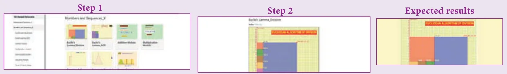
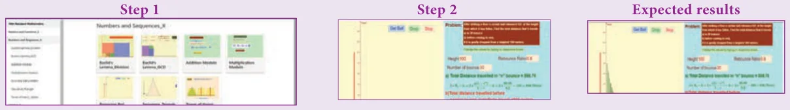

ICT 2.1
Step 1: Open the Browser type the URL Link given below (or) Scan the QR Code. GeoGebra work book named “Numbers and Sequences” will open. In the left side of the work book there are many activity related to mensuration chapter. Select the work sheet “Euclid’s Lemma division”
Step 2: In the given worksheet Drag the point mentioned as “Drag Me” to get new set of points. Now compare the Division algorithm you learned from textbook.

ICT 2.2
Step 1: Open the Browser type the URL Link given below (or) Scan the QR Code. GeoGebra work book named “Numbers and Sequences” will open. In the left side of the work book there are many activity related to mensuration chapter. Select the work sheet “Bouncing Ball Problem”.
Step 2: In the given worksheet you can change the height, Number of bounces and debounce ratio by typing new value. Then click “Get Ball”, and then click “Drop”. The ball bounces as per your value entered. Observe the working given on right hand side to learn the sum of sequence.

You can repeat the same steps for other activities
https://www.geogebra.org/m/jfr2zzgy#chapter/356192
or Scan the QR Code.